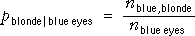
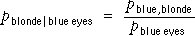

Conditional proportions
Consider again hair colour (Y ) and eye colour (X ) in a group of teenagers. The proportion of teenagers who are blonde, conditional on blue eyes, is the proportion of blondes within the sub-population with blue eyes. The conditional proportion is most easily understood as the ratio of the numbers with (a) blue eyes and (b) both blonde hair and blue eyes.

However we can equivalently write the conditional proportion as the ratio of a joint and marginal proportion:

The general definition of the conditional proportions for Y given that the value of X is x therefore
Conditional proportions in contingency tables
In a contingency table, it is usually possible to treat one of the two variables (corresponding to rows or columns) as splitting the individuals into groups. The distribution of the other variable within each such group is called a conditional distribution. If the variables are called X and Y, we can either
These are called the conditional distributions of Y given X, and the conditional distributions of X given Y, and we can compare them using proportions within the groups to make comparisons easier. The conditional proportions are found by dividing each frequency in the table by its row (or column) total. This scales each row (or column) of the table to sum to 1.0.
Rank and age in a university
The following contingency table again shows the rank and age of all academic staff in a university in the USA.
Select Proportion from the pop-up menu to see the conditional distributions for each Age group. In effect, this scales the frequencies in each row of the contingency table to add to 1.0. Click on the row for Under 30 to see how the conditional proportions are obtained by dividing the joint frequencies by the marginal frequency for Under 30.
Now choose Rank from the pop-up menu on the right to see the conditional distributions for each Rank. Click on columns to see how these conditional proportions are obtained from the joint frequencies.
Graphical displays of conditional distributions
The conditional distributions can be shown graphically on a 3-dimensional bar chart, but a clustered 2-dimensional display is usually easier to interpret. Note however that several different types of clustered displays can be drawn — they make it easier to compare different aspects of the distributions.
Rank and age
The clustered bar chart below initially shows the joint frequencies for all combinations of age and rank.
First select Rank from the pop-up menu under the bar chart to cluster the bars by rank. The total number of instructors is small, so it is difficult to campare the ages of instructors to those of the other ranks. Select Propn within Rank from the pop-up menu at the top to display the conditional distributions of age within rank. It effectively scales each rank's bars to give the same total (1.0).
It is now easy to see that the age distributions of assistant professors and instructors are very similar, but both are different from those of associate and full professors.
Select Frequency and Age from the two menus to show the raw counts, clustered by age. Select Propn within Age to display the conditional distributions of the ranks of staff who are in each age group.
This diagram emphasises the spike in assistant professors for the youngest staff, and the increasing proportion of associate and full professors as staff get older.
Conditional probabilities
Conditional distributions were described above in terms of proportions from sample data. Similar definitions hold when describing populations with the word "proportion" replaced by "probability". In particular, the conditional probabilities for Y, given X = x are given by the ratio of a joint probability and a marginal probability,

The conditional probabilities for Y, given X = x , can therefore be found by rescaling of that row of the table of joint probabilities (dividing by px ) so that the row sums to 1.0, as shown in the diagram below.

Rank and age
Consider the data above about the ages and ranks of academic staff members at a US university. If a full professor is chosen at random from the staff, the probability that the person is under 30 is a conditional probability. Since there were 2 people under 30 out of the 430 full professors,
P(Under 30 | Full professor) = 2/430
In terms of the marginal and conditional probabilities, this could also be expressed as
P(<30 | Full prof) = P(<30 and Full prof) / P(Full prof) = (2/1164) / (430/1164)
Similarly, if a staff member under 30 is randomly chosen, the probability of the person being a full professor is
P(Full professor | Under 30) = 2/68
Two sets of conditional probabilities
Note that there is an equivalent formula for conditional probabilities for X given the value of Y that corresponds to using the other variable to define the sub-population. When we restrict attention to population values for which Y has the value y , the conditional probabilities for X are

You should be careful to distinguish between px | y and py | x.
The probability of being pregnant, given that a randomly selected person is female would be fairly small. The probability of being female, given that a person is pregnant is 1.0 !!